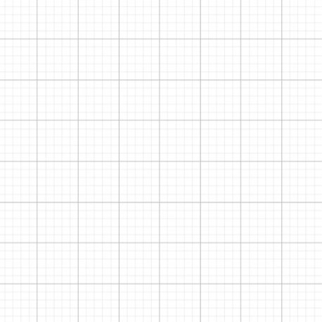

Transformasi Geometri
Your browser does not support the audio element.
Your browser does not support the audio element.
Your browser does not support the audio element.
Kamu harus menyelesaikan halaman ini dulu!
Transformasi
Apa itu Transformasi?
Pengertian Transformasi
Geometri
Objek Setelah
Bertransformasi
Tes Pemahaman
Transformasi
Apa itu Transformasi?
Pengertian Transformasi
Geometri
Objek Setelah
Bertransformasi
Tes Pemahaman
Pengertian Transformasi Geometri
Segitiga merupakan salah satu objek geometri yang kita sangat sering lihat. Coba perhatikan apa yang terjadi pada segitiga di bawah!

Apakah segitiga tersebut mengalami perubahan atau tidak?
A
Tidak Berubah
B
Berubah
Berubah
Karena segitiga tersebut mengalami perubahan maka hal tersebut adalah contoh
transformasi geometri
Kesimpulan:
Transformasi geometri adalah suatu perubahan posisi atau ukuran pada objek geometri seperti titik, garis, atau bangun datar.